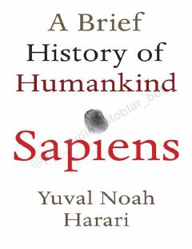

SAInsoniyatning paydo bo'lishi va rivojlanish bosqichlari haqidagi qiziqarli tarixiy tadqiqot.
Ushbu kitob insoniyatning paydo bo'lishidan tortib, zamonaviy davrgacha bo'lgan evolyutsion va madaniy rivojlanishini tahlil qiladi. Muallif Homo sapiens turining dunyoni zabt etishida kognitiv, qishloq xo'jaligi va ilmiy inqiloblarning o'rnini ilmiy va falsafiy nuqtai nazardan yoritib beradi.